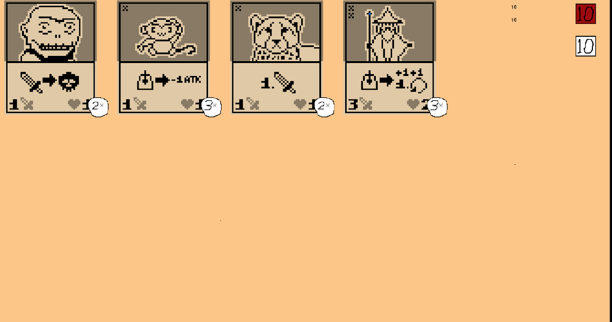

Magic Draw
Magic draw is a project that i made together with a team in block 2 year 1 of my cmgt studies. The game revolves around a turn based card game in which the player has to strategize and plan ahead in order to defeat their AI opponent. Each card has it's unique stats, as well as certain abilities. The player has to try and match these abilities to the opponent's cards in order to win fights and deal damage to the enemy's health. The cards are placed on the left 3 places and move to the right every single turn.
My Role In The Team
My role in this project was a programmer. I coded all the logic of the cardgame, the ai and everything that was making the game work in the back end. I took communication in this project in good consideration before making changes to the game to keep it as close to the base concept as possible. Besides that, my team and I did usability testing to test the hueristics of the game and to ensure it's playability.